In this section, we continue to develop the Personal Budget workbook. Notable items that are missing from the Budget Detail worksheet are the payments you might make for a car or a home. In addition, you may want to set and track a savings goal. This section demonstrates Excel functions used to calculate lease payments for a car, to calculate mortgage payments for a house, and to project future savings based on regular contributions and an average rate of return. This section also discusses the scenario capabilities of Excel once the Personal Budget workbook is complete.
Follow-along file: Continue with Excel Objective 2.00. (Use file Excel Objective 2.10 if starting here.)
One of the functions we will add to the Personal Budget workbook is the PMT function. This function calculates the payments required for a loan or a lease. However, before demonstrating this function, it is important to cover a few fundamental concepts on loans and leases.
A loanA contractual agreement in which money is borrowed from a lender and paid back over a specific period of time. is a contractual agreement in which money is borrowed from a lender and paid back over a specific period of time. The amount of money that is borrowed from the lender is called the principalThe amount of money borrowed from a lender. of the loan. The borrower is usually required to pay the principal of the loan plus interest. When you borrow money to buy a house, the loan is referred to as a mortgageA loan used to purchase a home or property.. This is because the house being purchased also serves as collateral to ensure payment. In other words, the bank can take possession of your house if you fail to make loan payments. As shown in Table 2.5 "Key Terms for Loans and Leases", there are several key terms related to loans and leases.
Table 2.5 Key Terms for Loans and Leases
| Term | Definition |
|---|---|
| Collateral | Any item of value that is used to secure a loan to ensure payments to the lender |
| Down Payment | The amount of cash paid toward the purchase of a house. If you are paying 20% down, you are paying 20% of the cost of the house in cash and are borrowing the rest from a lender. |
| Interest Rate | The interest that is charged to the borrower as a cost for borrowing money |
| Mortgage | A loan where property is put up for collateral |
| Principal | The amount of money that has been borrowed |
| Residual Value | The estimated selling price of a vehicle at a future point in time |
| Terms | The amount of time you have to repay a loan |
Figure 2.29 "Example of an Amortization Table" shows an example of an amortization tableA schedule of payments broken down by interest and principal for a loan. By law, a lender is required to provide an amortization table to a borrower. for a loan. A lender is required by law to provide borrowers with an amortization table when a loan contract is offered. The table in the figure shows how the payments of a loan would work if you borrowed $100,000 from a lender and agreed to pay it back over 10 years at an interest rate of 5%. You will notice that each time you make a payment, you are paying the bank an interest fee plus some of the loan principal. Each year the amount of interest paid to the bank decreases and the amount of money used to pay off the principal increases. This is because the bank is charging you interest on the amount of principal that has not been paid. As you pay off the principal, the interest rate is applied to a lower number, which reduces your interest charges. Finally, the figure shows that the sum of the values in the Interest Payment column is $29,505. This is how much it costs you to borrow this money over 10 years. Indeed, borrowing money is not free. It is important to note that to simplify this example, the payments were calculated on an annual basis. However, most loan payments are made on a monthly basis.
Figure 2.29 Example of an Amortization Table
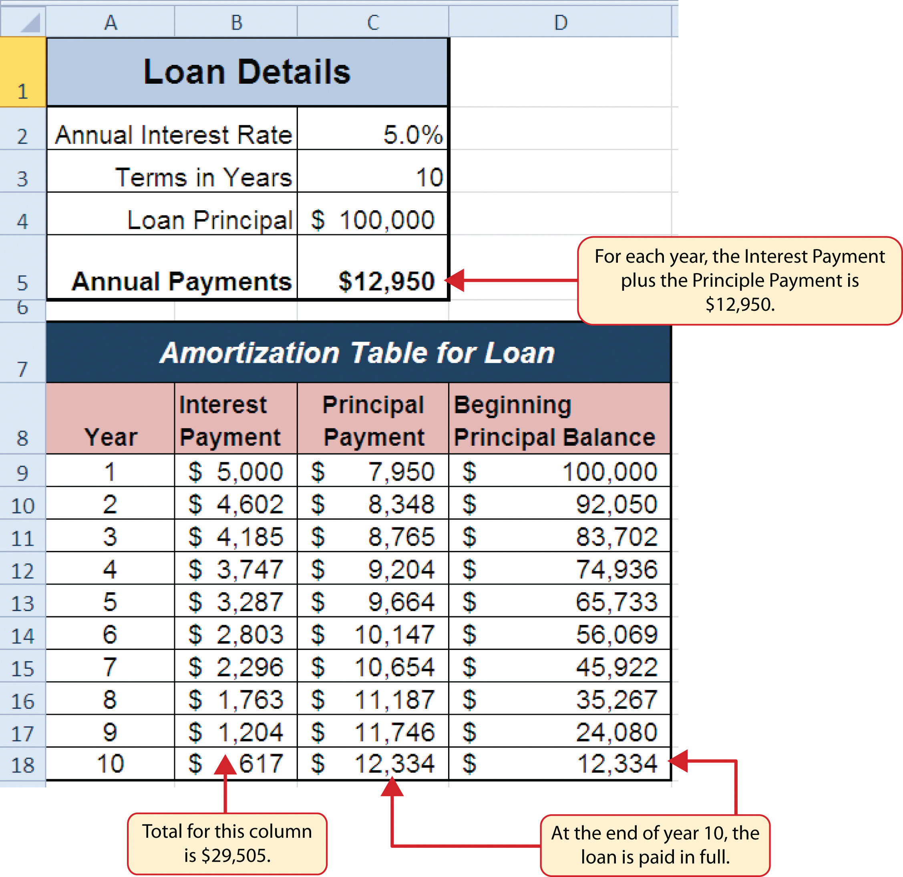A leaseA contract in which the lessee uses an asset such as a car or a piece of equipment and agrees to make regular payments to the owner or the lessor. The lessee is often required to return the leased asset to the lessor at the conclusion of the lease contract. is a contract in which you, the lessee, use an asset such as a car or a piece of equipment and you agree to make regular payments to the owner or the lessor. When you lease a car, the manufacturer or a leasing company retains ownership of the vehicle and you agree to make regular payments for a specific period of time. The amount of money you pay depends on the price of the car, the terms of the lease contract, and the car’s expected residual value at the end of the lease. The calculation of lease payments is similar to the calculation of loan payments. However, when you lease a car, you pay only the value of the car that is used. For example, suppose you are leasing a car that is priced at $25,000. The lease contract is for 4 years at an interest rate of 5%. The residual value of the car is $10,000. This means the car will lose $15,000 of its value over 4 years. Another way to state this is that the car will depreciate $15,000. A lease will be structured so that you pay this $15,000 in depreciation. However, the interest charges will be based on the purchase price of $25,000. We will look at a demonstration of leasing a car as well as buying a home in the next section.
Follow-along file: Continue with Excel Objective 2.00. (Use file Excel Objective 2.10 if starting here.)
If you own a home, your mortgage payments are a major component of your household budget. If you are planning to buy a home, having a clear understanding of your monthly payments is critical for maintaining strong financial health. In Excel, mortgage payments are conveniently calculated through the PMT (payment) function. This function is more complex than the statistical functions covered in Section 2.2 "Statistical Functions". With statistical functions, you are required to add only a range of cells or selected cells within the parentheses of the function. With the PMT function, you must accurately define a series of arguments in order for the function to produce a reliable output. Table 2.6 "Arguments for the PMT Function" lists the arguments for the PMT function. It is helpful to review the key loan and lease terms in Table 2.5 "Key Terms for Loans and Leases" before reviewing the PMT function arguments.
Table 2.6 Arguments for the PMT Function
| Argument | Definition |
|---|---|
| Rate | This is the interest rate the lender is charging the borrower. The interest rate is usually quoted in annual terms, so you have to divide this rate by 12 if you are calculating monthly payments. |
| Nper | The argument letters stand for number of periods. This is the term of the loan, which is the amount of time you have to repay the bank. This is usually quoted in years, so you have to multiply the years by 12 if you are calculating monthly payments. |
| Pv | The argument letters stand for present value. This is the principal of the loan or the amount of money that is borrowed. When defining this argument, a minus sign must precede the cell location or value. For leases, this argument is used for the price of the item being leased. |
| [Fv] | The argument letters stand for future value. The brackets around the argument indicate that it is not always necessary to define it. It is used if there is a lump-sum payment that will be made at the end of the loan terms. This is also used for the residual value of a lease. If it is not defined, Excel will assume that it is zero. |
| [Type] | This argument can be defined with either a 1 or a 0. The number 1 is used if payments are made at the beginning of each period. A 0 is used if payments are made at the end of each period. The argument is in brackets because it does not have to be defined if payments are made at the end of each period. Excel assumes that this argument is 0 if it is not defined. |
We will use the PMT function in the Personal Budget workbook to calculate the monthly mortgage payments for a house. These calculations will be made in the Mortgage Payments worksheet and then displayed in the Budget Summary worksheet through a cell reference link. So far we have demonstrated several methods for adding functions to a worksheet. The following steps explain a new method using the Insert Function command for adding the PMT function:
Click the Insert Function button (see Figure 2.30 "Mortgage Payments Worksheet"). This opens the Insert Function dialog box, which can be used for searching all functions in Excel.
Figure 2.30 Mortgage Payments Worksheet
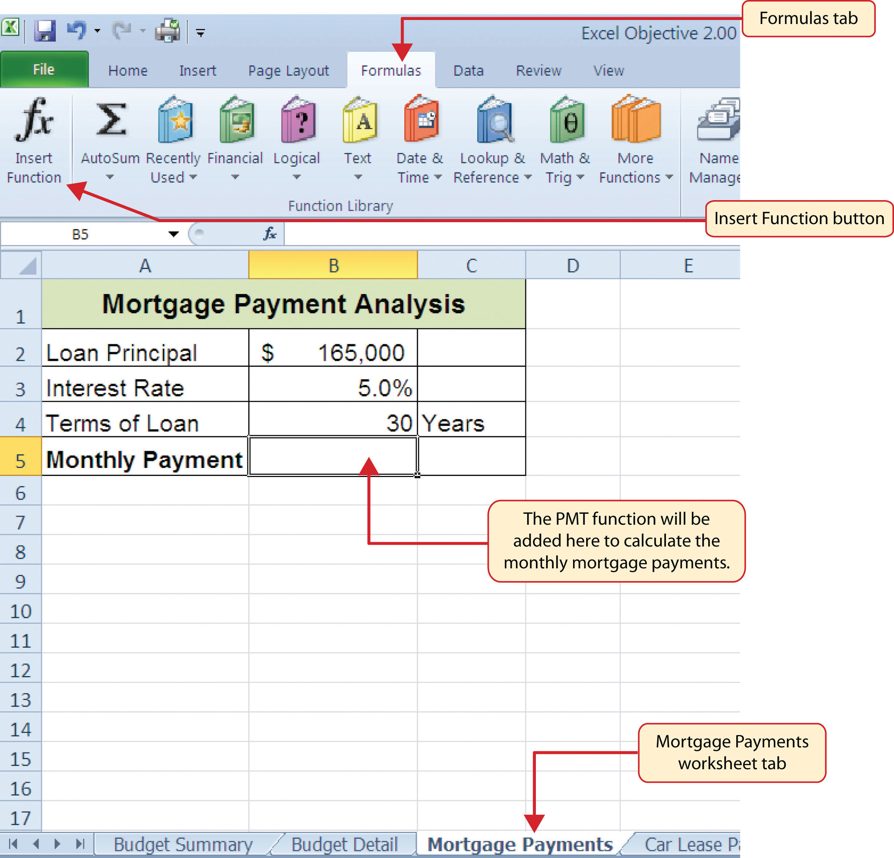Click the OK button at the lower right side of the Insert Function dialog box. This will open the Function Arguments dialog box.
Figure 2.31 Insert Function Dialog Box
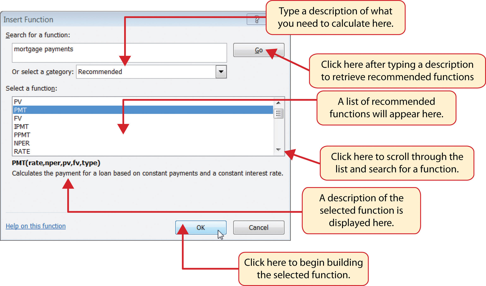Insert Function
Function Arguments Dialog Box
Figure 2.32 "Function Arguments Dialog Box for the PMT Function" shows the completed Function Arguments dialog box for the PMT function. Notice that the dialog box shows the values for the Rate and Nper arguments. The Rate is divided by 12 to convert the annual interest rate to a monthly interest rate. The Nper argument is multiplied by 12 to convert the terms of the loan from years to months. Finally, the dialog box provides you with a definition for each argument. The definition appears when you click in the input box for the argument.
Figure 2.32 Function Arguments Dialog Box for the PMT Function
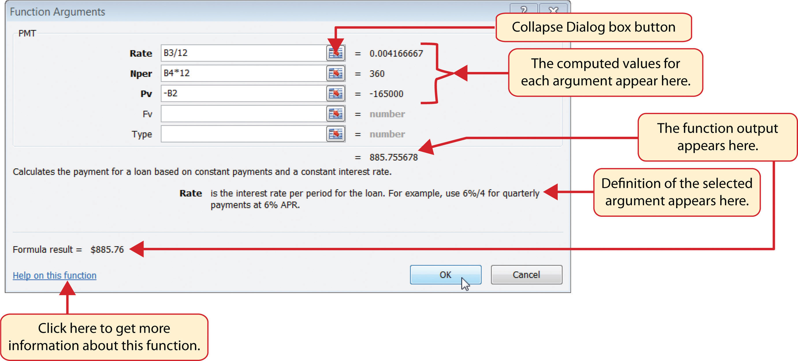Comparable Arguments for PMT and FV Functions
When using functions such as PMT or FV, make sure the arguments are defined in comparable terms. For example, if you are calculating the monthly payments of a loan, make sure both the Rate and Nper argument are expressed in terms of months. The function will produce an erroneous result if one argument is expressed in years while the other is expressed in months.
Figure 2.33 "Mortgage Payments Worksheet with the PMT Function" shows the final appearance of the Mortgage Payments worksheet after the PMT function is added. The result of the function in cell B5 will be displayed in the Budget Summary worksheet.
Figure 2.33 Mortgage Payments Worksheet with the PMT Function
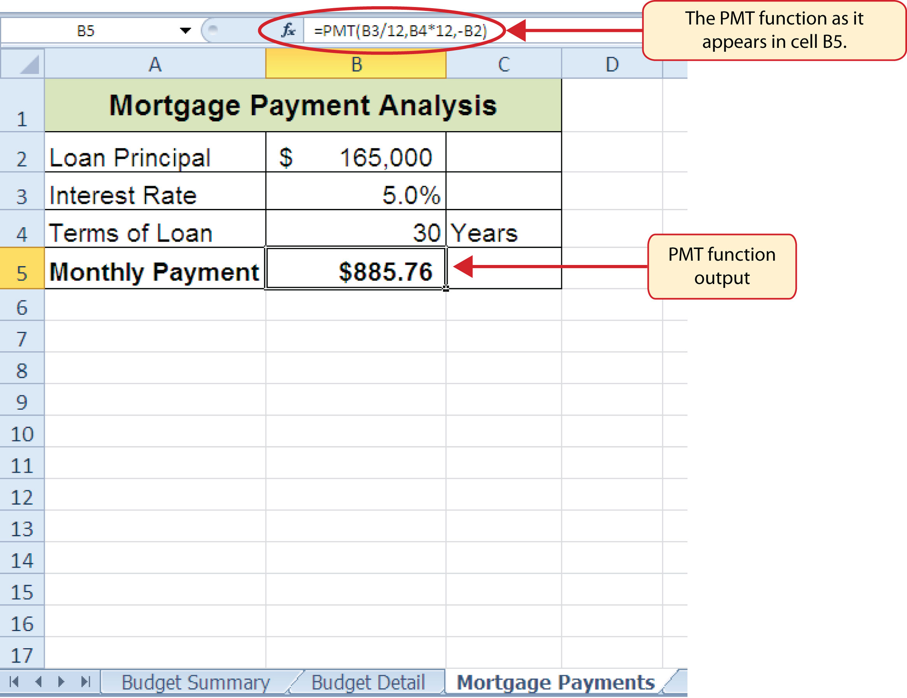Follow-along file: Continue with Excel Objective 2.00. (Use file Excel Objective 2.11 if starting here.)
In addition to calculating the mortgage payments for a home, the PMT function will be used in the Personal Budget workbook to calculate the lease payments for a car. The details for the lease payments are found in the Car Lease Payments worksheet. Similar to the statistical functions, we can type the PMT function directly into a cell. However, you must know the definitions for each argument of the function and understand how these arguments need to be defined based on your objective. The terms for loans and leases are in Table 2.5 "Key Terms for Loans and Leases", and the definitions for the arguments of the PMT function are in Table 2.6 "Arguments for the PMT Function". The following steps explain how the PMT function is added to the Personal Budget workbook to calculate the lease payments for a car:
Figure 2.34 "PMT Function Constructed to Calculate Lease Payments" shows how the PMT function should appear before pressing the ENTER key. Notice the commas that separate each argument of the function. Also, the tip box will show the current argument being defined in bold font.
Figure 2.34 PMT Function Constructed to Calculate Lease Payments
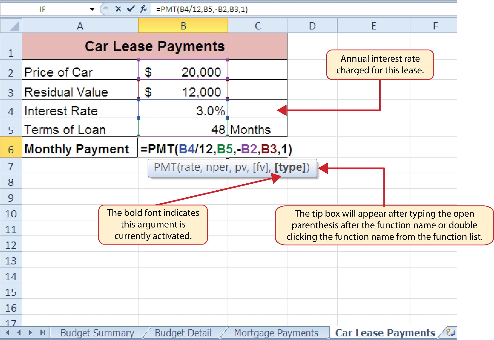Figure 2.35 "Results of the PMT Function in the Car Lease Payments Worksheet" shows the result of the PMT function. The monthly payments for this lease are $206.56. This monthly payment will be displayed in the Budget Summary worksheet.
Figure 2.35 Results of the PMT Function in the Car Lease Payments Worksheet
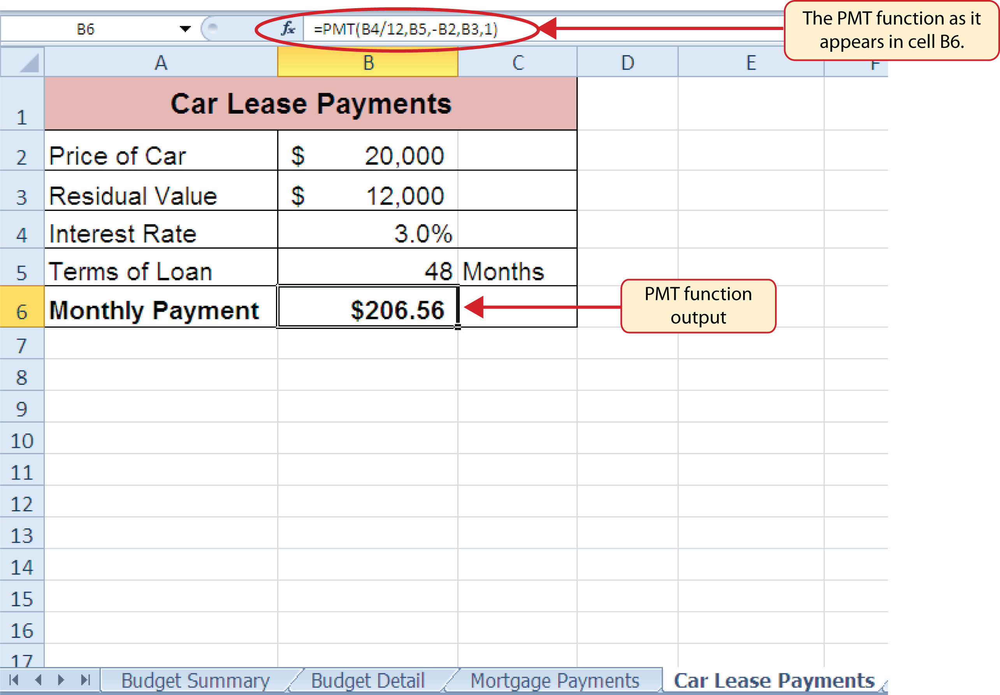Follow-along file: Continue with Excel Objective 2.00. (Use file Excel Objective 2.12 if starting here.)
So far we have used cell references in formulas and functions, which allow Excel to produce new outputs when the values in the cell references are changed. Cell references can also be used to display values or the outputs of formulas and functions in cell locations on other worksheets. This is how data will be displayed on the Budget Summary worksheet in the Personal Budget workbook. Outputs from the formulas and functions that were entered into the Budget Detail, Mortgage Payments, and Car Lease Payments worksheets will be displayed on the Budget Summary worksheet through the use of cell references. The following steps explain how this is accomplished:
Figure 2.36 "Cell Reference Showing the Total Expenses in the Budget Summary Worksheet" shows how the cell reference appears in the Budget Summary worksheet. Notice that the cell reference D12 is preceded by the Budget Detail worksheet name enclosed in apostrophes followed by an exclamation point (‘Budget Detail’!) This indicates that the value displayed in the cell is referencing a cell location in the Budget Detail worksheet.
Figure 2.36 Cell Reference Showing the Total Expenses in the Budget Summary Worksheet
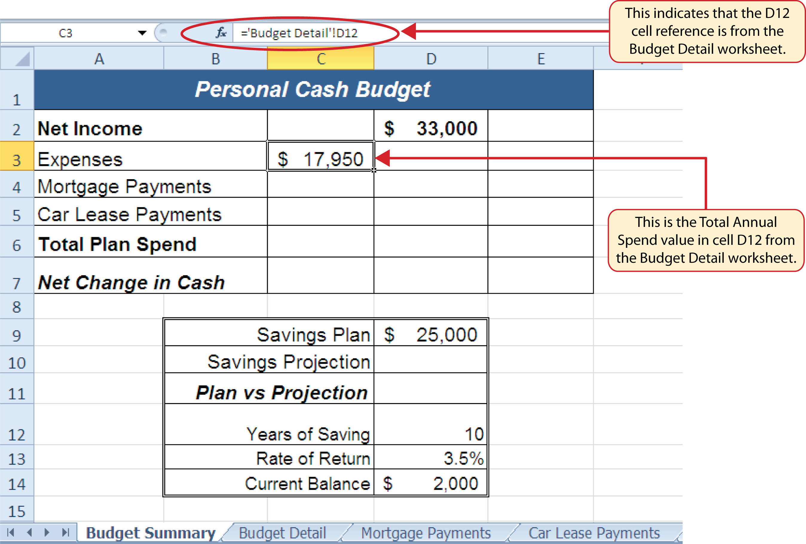As shown in Figure 2.36 "Cell Reference Showing the Total Expenses in the Budget Summary Worksheet", the Budget Summary worksheet is designed to show the expense budget for the mortgage payments and the auto lease payments. However, you will recall that we used the PMT function to calculate the monthly payments. In the Budget Summary worksheet, we need to show the total annual payments. As a result, we will create a formula that references cell locations in the Mortgage Payments and Car Lease Payments worksheets. The following steps explain how this is accomplished:
Figure 2.37 "Formulas Referencing Cells in Mortgage Payments and Car Lease Payments Worksheets" shows the results of creating formulas that reference cell locations in the Mortgage Payments and Car Lease Payments worksheets.
Figure 2.37 Formulas Referencing Cells in Mortgage Payments and Car Lease Payments Worksheets
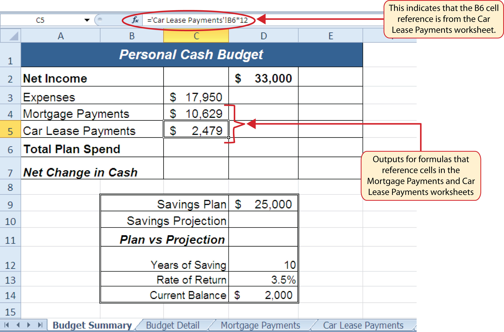We can now add other formulas and functions to the Budget Summary worksheet that can calculate the difference between the total spend dollars vs. the total net income in cell D2. The following steps explain how this is accomplished:
Figure 2.38 "Formulas Added to Show Income Is Greater Than Expenses" shows the results of the formulas that were added to the Budget Summary worksheet. The output for the formula in cell D7 shows that the net income exceeds total planned expenses by $1,942. Overall, having your income exceed your total expenses is a good thing because it allows you to save money for future spending needs or unexpected events.
Figure 2.38 Formulas Added to Show Income Is Greater Than Expenses
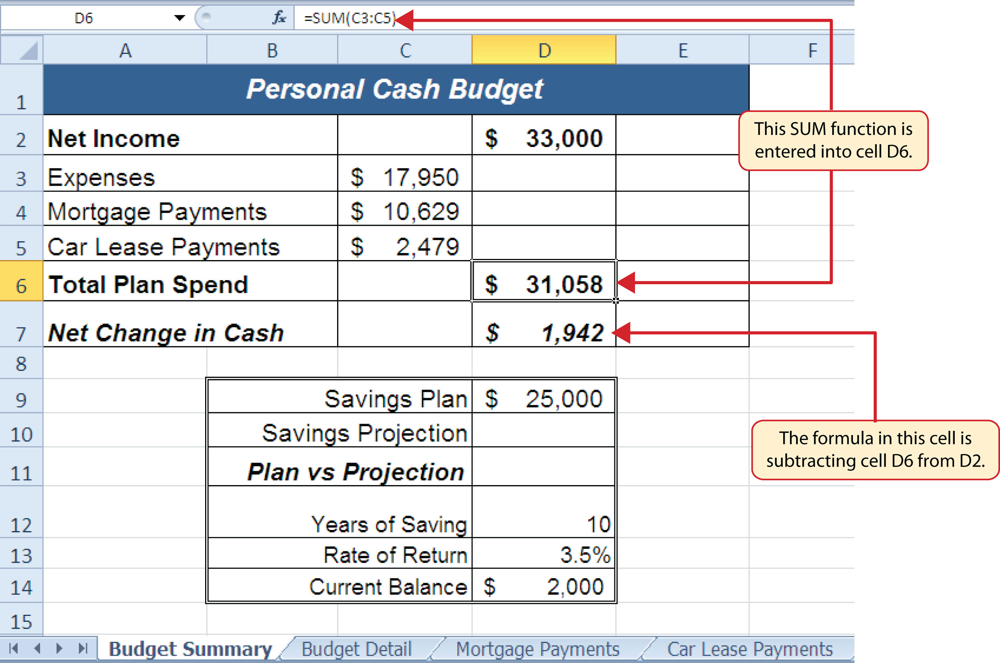We can now add a few formulas that calculate both the spending rate and the savings rate as a percentage of net income. These formulas require the use of absolute references, which we covered earlier in this chapter. The following steps explain how to add these formulas:
Figure 2.39 "Calculating the Savings Rate" shows the output of the formulas calculating the spending rate and savings rate as a percentage of net income. The absolute reference shown for cell D2 prevents the cell from changing when the formula is copied from cell E6 and pasted into cell E7. The results of the formula show that our current budget allows for a savings rate of 5.9%. This is a fairly good savings rate. In the next section we will discuss how these savings can grow over time by exploring the time value of money concepts.
Figure 2.39 Calculating the Savings Rate

Follow-along file: Continue with Excel Objective 2.00. (Use file Excel Objective 2.13 if starting here.)
In reviewing the Budget Summary worksheet in Figure 2.39 "Calculating the Savings Rate", you will notice that the range B9:D14 contains data that can be used to assess a savings plan. We can project how much money can be saved over a specific period of time given set contributions and a rate of return. This calculation is accomplished through the future value, or FV, function. We will use the FV function in cell D10 of the Budget Summary worksheet to calculate our savings plan projection. However, before we use the FV function, it is important to review a few basic concepts regarding the time value of money, as shown in Table 2.7 "Key Terms for Time Value of Money Concepts".
Table 2.7 Key Terms for Time Value of Money Concepts
| Argument | Definition |
|---|---|
| Annuity | An investment that is made in regular payments over a period of time. For example, depositing $100 a month into an interest-bearing bank account or mutual fund is considered an annuity. |
| Bonds | An investment in which you lend money to a company or government entity. The borrower agrees to pay you interest over a specific period time. At the end of the bond agreement, the amount of money that was borrowed, or your initial investment, is returned to you. Most bonds are considered a lower risk investment but offer a lower rate of return than stocks offer. |
| Mutual Funds | A collection of similar investments managed by a financial professional called a fund manager. Mutual funds allow you to invest in several stocks or bonds without having to make many individual investments. They also allow you to reduce your risk and take advantage of the investment expertise of a professional. |
| Rate of Return | The percentage gained or lost on an investment. Investments that offer a high predicted rate of return often carry a higher risk of losing money. Investments that offer a lower predicted rate of return often carry a lower risk of losing money. |
| Stocks | An investment in which you own a portion of a company. The value of this investment increases as the company produces higher profits. Most stocks are expected to generate a higher rate of return than bonds generate. However, the risk of losing money on a stock investment is much greater than the risk for bonds. |
Table 2.7 "Key Terms for Time Value of Money Concepts" provides definitions for several terms used when addressing the time value of money concepts. The time value of moneyThe opportunity to increase the value of money over time through investments that provide a constant or average positive rate of return. is the opportunity to grow your money over time given a constant or average rate of return. For example, consider the data shown in Figure 2.40 "Time Value of Money Example for a One-Time Investment". This data assumes that a person makes a one-time investment of $100 in a bond mutual fund that returns 5% interest per year. Notice that the interest paid in Column E increases every year. This is because the interest is reinvested in the mutual fund, which increases the total value of the investment. For example, the interest earned in year 1 is based on a $100 investment. Therefore, the interest paid is $5.00, or 5% of $100. However, in year 2, when the $5.00 interest payment is reinvested, the total investment increases to $105. Therefore, in year 2 the interest paid increases to $5.25, or 5% of $105. The value of the investment at the end of 5 years is $127.63. This is the value that can be calculated using the FV function.
Figure 2.40 Time Value of Money Example for a One-Time Investment

Figure 2.41 "Time Value of Money Example for an Annuity Investment" shows another example demonstrating the time value of money concept. Instead of making a one-time investment, we will assume that a person invests $100 at the beginning of every year in the same bond mutual fund. This is referred to as an annuityAn investment made in regular payments over a period of time. because the person is making reoccurring investments over a specific period of time. Notice that the value of this investment after 5 years is $580.19. Also, the total interest earned on this investment is $80.19 as opposed to the $27.63 earned on the one-time investment in Figure 2.40 "Time Value of Money Example for a One-Time Investment".
Figure 2.41 Time Value of Money Example for an Annuity Investment
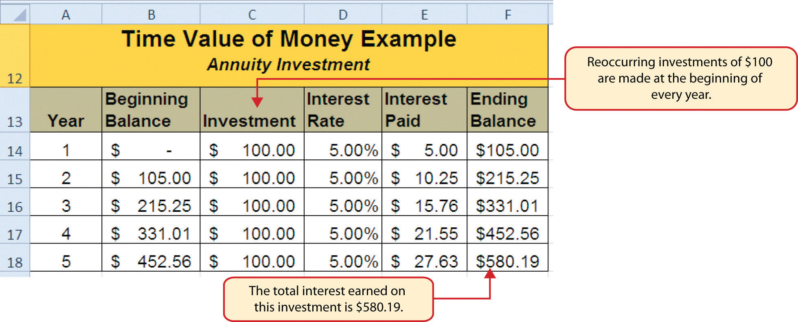Follow-along file: Continue with Excel Objective 2.00. (Use file Excel Objective 2.13 if starting here.)
Establishing a personal savings plan is one of the most important financial exercises you can do. For example, a savings plan is critical for establishing financial security for your retirement years. Many people mistakenly believe that saving for retirement is something you do when you get older. However, the greatest financial gains for your retirement can be achieved if you start saving in the earliest years of your career. Now that you have an understanding of the time value of money, you can see that the more years you can earn interest on your investments and reinvest those earnings, the more money you will have when you retire. Savings plans are also important for other key life events, such as going to college or buying a home. The FV function is a convenient tool that can help you establish savings goals and project the value of your investments over time. Similar to the PMT function, the FV function requires you to accurately define specific arguments in order to produce a reliable result. Table 2.8 "Arguments for the FV Function" provides definitions for each of the arguments in the FV function. It is helpful to review the time value of money terms in Table 2.7 "Key Terms for Time Value of Money Concepts" before using the FV function.
Table 2.8 Arguments for the FV Function
| Argument | Definition |
|---|---|
| Rate | This is the rate of return you expect to earn on an investment over time. This rate is usually quoted in annual terms, so you have to divide by 12 if you are calculating the value of an annuity making investments on a monthly basis. |
| Nper | The argument letters stand for number of periods. This is the amount of time you are using to measure the value of an investment. The amount of time used to define this argument must be comparable to the Rate argument. For example, if the rate is stated in terms of months, the amount of time used to define this argument must be in months. |
| Pmt | The argument letters stand for payment. This argument is used if you are measuring the value of an annuity investment. The argument is defined with the value of the investment that is made for each measure of time used to define the Nper argument. For example, if the Nper argument is expressed in terms of months, you must define this argument with the investment value that is made every month. |
| [Pv] | The argument letters stand for present value. The brackets around the argument indicate that it is not always necessary to define it. Excel assumes zero if the argument is not defined. The argument is used when measuring the value of a one-time investment. Both this argument and the Pmt argument will be defined if an annuity investment has a beginning balance or includes a beginning one-time lump-sum investment. |
| [Type] | This argument can be defined with either a 1 or a 0. The number 1 is used if investments are made at the beginning of each period used to define the Nper argument. A 0 is used if the investments are made at the end of each period. The argument is in brackets because it does not have to be defined if your investments are made at the end of each period. Excel assumes that this argument is 0 if it is not defined. |
With respect to the Personal Budget workbook, we will use the FV function to project the value of the savings plan in 10 years. We will type the function directly into the Personal Budget worksheet for this demonstration. However, you can use any of the methods demonstrated in this chapter for future use. The following steps explain how this function is added to the worksheet:
PMT and FV Functions Produce Negative Results
If the results of the PMT function or FV function are negative, check the Pv or Pmt arguments. Remember that these arguments must be preceded by a minus sign. If the minus sign is omitted, the functions produce a negative output.
Figure 2.42 "Results of the Savings Plan Projections" shows the results of the FV function. Notice that the current savings plan projection is $25,606. This is $606 higher than the target of $25,000 entered into cell D9, which shows that the current budget is working to achieve the goals of this savings plan. In other words, given the current net income, we are saving enough money to achieve our savings plan goals.
There are two important factors to notice with regard to this plan. The first factor is that our spending plan allows us to save enough money so that it can be invested to achieve our target of $25,000. The second factor is that the expected rate of return is 3.5%. This is a relatively low expected rate of return and could be achieved by investing in relatively low-risk investments such as bonds as opposed to stocks. This rate can be considered good because we can achieve our savings goals without having to make high-risk investments that could result in a significant loss of our savings.
Figure 2.42 Results of the Savings Plan Projections
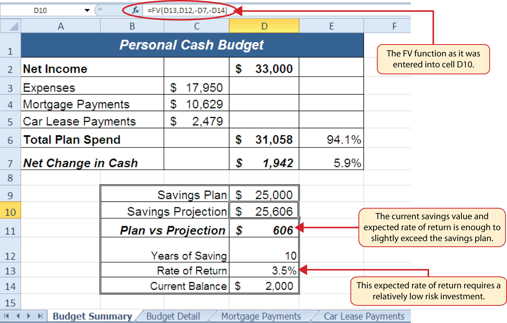Follow-along file: Continue with Excel Objective 2.00. (Use file Excel Objective 2.14 if starting here.)
We used several formulas and functions to complete the Personal Budget workbook shown in Figure 2.42 "Results of the Savings Plan Projections". All the formulas and functions entered contain cell references that allow for a variety of what-if scenarios. Goal Seek is a tool that can be used in the process of conducting these what-if scenarios. Goal Seek maximizes the benefits of Excel’s cell-referencing capabilities by changing inputs to precise values to achieve specific outputs produced by formulas or functions. We will begin by changing one of the inputs in the Personal Budget workbook through the following steps:
Figure 2.43 "Budget Detail Worksheet " and Figure 2.44 "Budget Detail Worksheet " show the Budget Detail worksheet before and after the change in the annual vacation budget. By comparing these two figures you can see that by changing just one input, many of the outputs produced by the formulas and functions in the worksheet changed. The following is a list of the changes that occurred in the worksheet:
Figure 2.43 Budget Detail Worksheet before Changing the Annual Vacation Budget
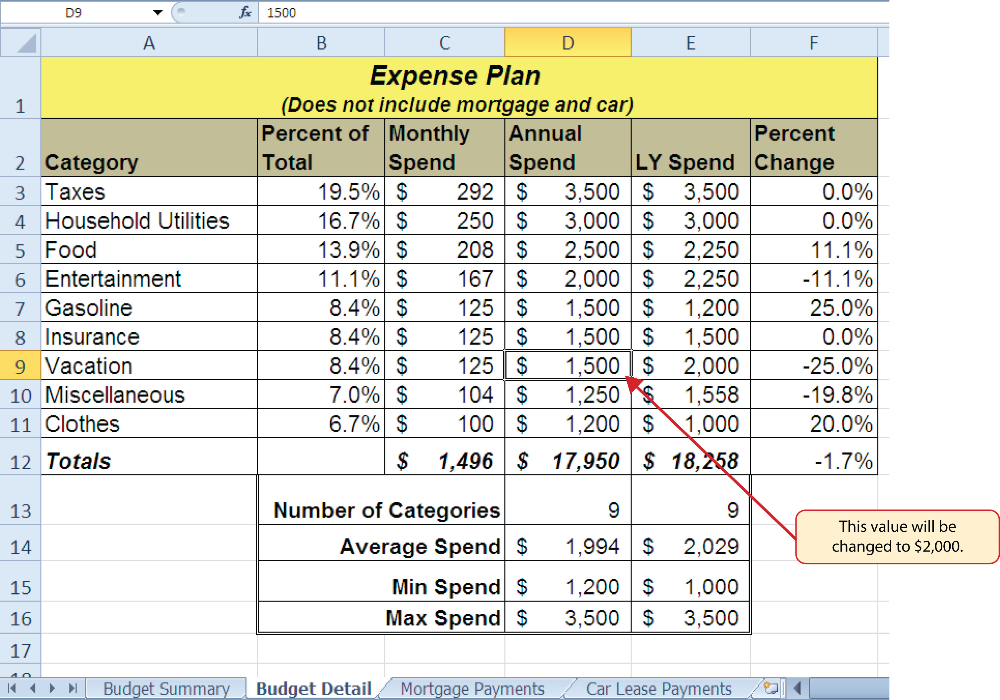Figure 2.44 Budget Detail Worksheet after Changing the Annual Vacation Budget
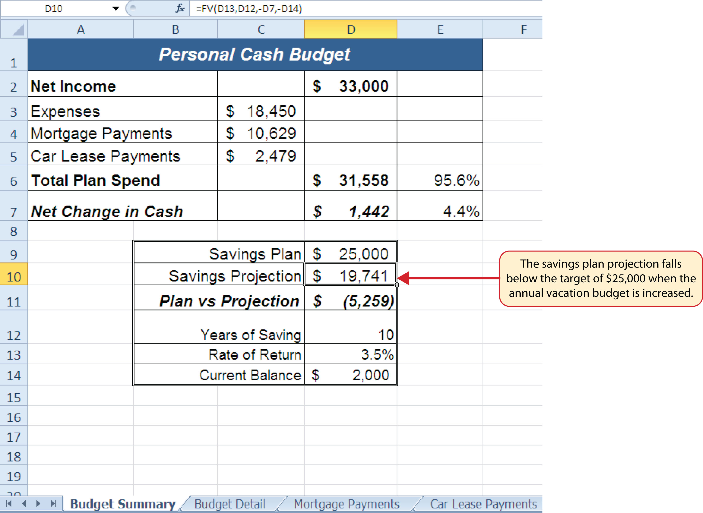In addition to the changes in the Budget Detail worksheet, outputs of formulas and functions on the Budget Summary worksheet also change when the Annual Spend for the Vacation category was increased. To see the changes, compare Figure 2.42 "Results of the Savings Plan Projections" to Figure 2.45 "Budget Summary Worksheet ". There were a total of fourteen changes in the outputs of formulas and functions on the Budget Summary worksheet. In total, there were twenty-one outputs that changed in the Personal Budget workbook as a result of changing just one input.
Figure 2.45 Budget Summary Worksheet after Changing the Annual Vacation Budget
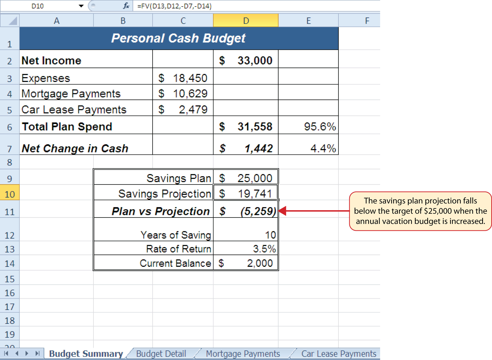One of the most notable changes on the Budget Summary worksheet is the Savings Projection in cell D10. By spending an additional $500 a year on vacation plans, the projected savings value in 10 years decreases by $5,865. However, what if the rate of return were to increase? An increase in the rate of return could recover the decrease in the future value of our savings plan. We can use a tool such as Goal Seek to determine exactly how much the rate of return would have to increase to achieve our savings plan target of $25,000. The following steps explain how to use Goal Seek to accomplish this goal:
Click Goal Seek from the list options (see Figure 2.46 "Selecting Goal Seek from the What-If Analysis Options"). This opens the Goal Seek dialog box.
Goal Seek
Figure 2.46 Selecting Goal Seek from the What-If Analysis Options
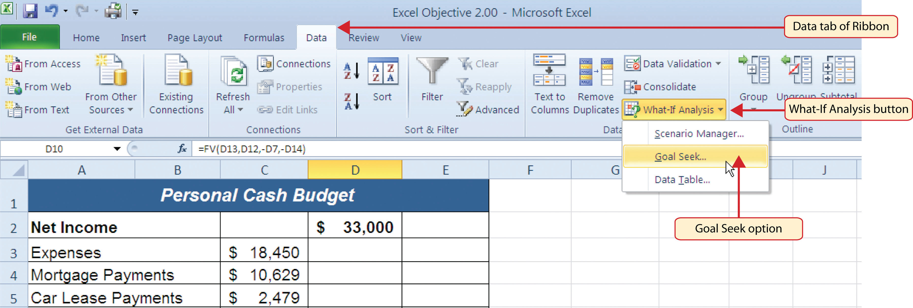Figure 2.47 Final Settings for the Goal Seek Dialog Box
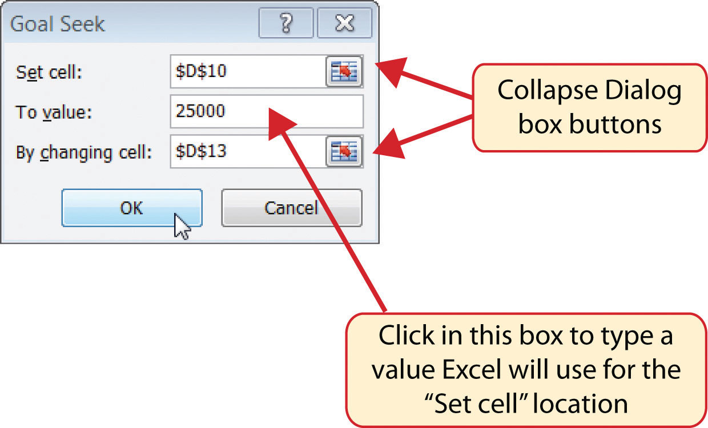Figure 2.48 "Solution Calculated by Goal Seek" shows the solution Goal Seek calculated for the rate of return. Notice that in order to achieve the target savings plan of $25,000, the rate of return must increase to 7.8%. Initially, it appears that we can spend the additional $500 a year on vacations and still achieve our savings goal of $25,000. However, achieving a 7.8% annual rate of return will require us to make riskier investments with our savings. Thus, there is a greater possibility that we could lose a substantial amount of our savings. This is the downside of decreasing your overall savings rate. If you save less money, it forces you to take higher risks with the money you have in order to achieve higher rates of return. Unfortunately, many people end up on the losing end of these risks, which severely compromises their ability to reach their savings goals.
Figure 2.48 Solution Calculated by Goal Seek
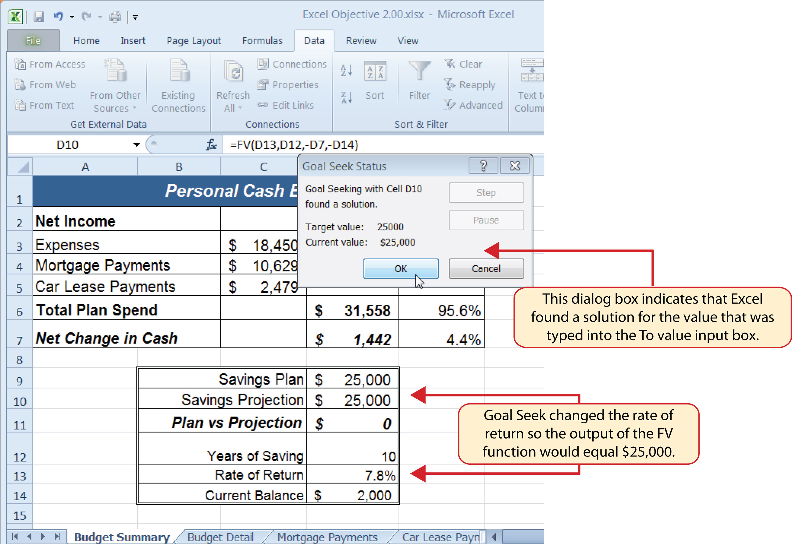Which statement best explains the setup of the following payment function: =PMT(.06,30,−200000,50000,0)? Note that the 6% annual interest rate is expressed in decimal terms as .06.
When leasing a car, the residual value will be used to define which of the following?
The recurring investments in an annuity investment would be used to define which of the following?
Which of the following PMT functions will accurately calculate the monthly payments on a mortgage if the price of the house is $300,000, a down payment of $60,000 is made, the interest rate is 5%, the term of the loan is 30 years, and payments are due at the end of every month?